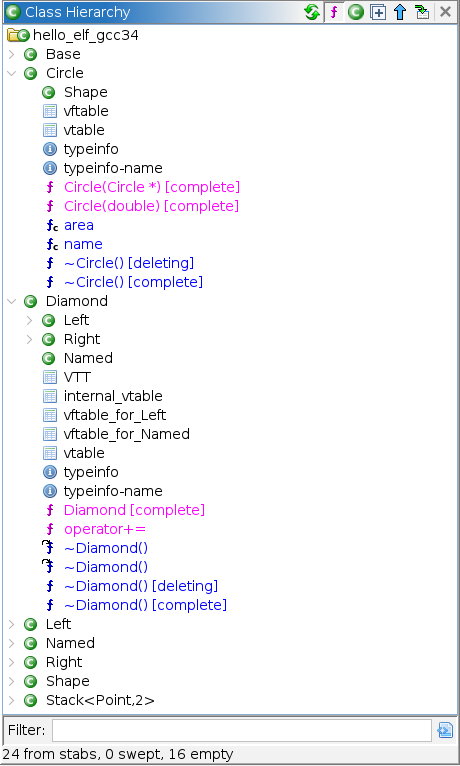

Imports STABS debug information into the program: data types, function signatures, parameters and locals, C++ classes and vtables, constants and static data members. Neither the DWARF nor the PDB importer can read this format, so without it the debug info stays in the program as opaque bytes.
The format is also called DBX, after the BSD debugger it was written for; "stabs" is short for the symbol table strings it hides the debug info in.
Supported across gcc 3.2 through 12, on both Unix and Cygwin targets, and across
ELF, PE/COFF and a.out images — in a.out the records live in the linker symbol table
rather than in debug sections, which the importer reads via the loader's
.symtab/.strtab blocks. (-gstabs was deprecated in
gcc 12 and removed outright in gcc 13, so 12 is a hard ceiling.)
Everything is driven by the Stabs Importer analyzer. Seven supporting analyzers clean up code and ABI details around it, Tools → Stabs re-runs the import, and two exporters write out the reconstructed sources.
Note: The extension does nothing on a program that carries no stabs — neither a
.stab/.stabstrpair nor an a.out symbol table. The analyzer does not appear as applicable, the menu action stays disabled and the exporters are not offered.
Runs automatically during auto-analysis, at low priority — deliberately after
Ghidra's demangler, whose results it builds on. The import happens once per program:
a Stabs Imported flag is written to the program information, and later
re-analysis passes short-circuit on it. To force another pass use
Tools → Stabs → Re-import.
What it applies to the program:
this, embedded
base classes, and Itanium <Class>_vftable structures applied at the
_ZTV symbols so virtual dispatch resolves..stab section itself.Set these under Analysis → Auto Analyze… → Stabs Importer. Because the import runs only once, change the options before the first analysis, or change them and then use Re-import.
Option Default Description Reconstruct C++ classes on Build class namespaces, this-typed member methods ( __thiscall) and<Class>_vftablestructs applied at_ZTV. Turning it off leaves plain structs: member calls lose theirthisand arguments, and virtual calls stay unresolved.Apply scope plate comments on Place plate comments at lexical scope boundaries wherever the compiler emitted scope records. Shorten templated names via typedefs off Rename long templated data types onto their shorter typedef aliases ( basic_string<char, …>→string), recursively inside other templates. Much more readable on C++ code; the original spelling is lost from the type name.Fold source-file spellings on gcc records one physical header under two spellings — its full include path and the bare name from #include "x.h". Folding merges them, by unique basename, onto a single rendered output file.Overlay .stab section structs on Decode every stab record into a StabRecordstructure — in the.stabsection, or in the a.out symbol table — with references to the string it names and back to the code or data it describes. Useful for inspecting the raw debug info in the Listing; costs nothing else.Minimum log level INFO Floor for messages written to the analysis log: DEBUG,INFO,WARNorERROR. Bookmarks and the end-of-import counter summary are emitted regardless.Source roots none Local checkouts of the sources this binary was built from, ;-separated. Every recorded source directory found under a root is registered as a directory transform (Source Files and Transforms), so the recorded paths resolve to real files. The Browse button chooses directories only, takes several at once, and adds them to the list rather than replacing it; the field itself stays editable. Read at import time only — adding a root later needs a re-import, though a transform added directly in the Source Files dialog is picked up immediately.
The import reports in three ways: filtered messages in the analysis log, an
Analysis bookmark at every diagnostic that has an address (so the Bookmarks
window doubles as a worklist of things it could not fully translate), and a summary of
counters — records read and parsed, types materialized, functions, globals, classes
and constants applied — at the end of the run.
Clears the Stabs Imported flag and re-runs auto-analysis, so the importer
executes again over the current program. This is the way to pick up changed analyzer
options. Types and symbols already applied are updated in place rather than duplicated,
but the pass is not free — on a large C++ binary it takes as long as the first
import did.
Two formats in the export dialog's list write the reconstructed sources, one file per
source file the debug info names: Stabs Decompilation (.decomp) and
Stabs Source Skeleton (.skeleton). They are two exporters rather than
one with a mode option because Ghidra fixes an exporter's file extension at construction.
Stabs Decompilation lays the code out at the original source lines, with Ghidra's decompiled statements placed across each function's line span and each tagged with the source line its instructions came from. gcc's SjLj exception scaffolding is elided (a no-op on ELF binaries, which use DWARF exception handling).
Within a function's span the declarations give way to the code. Everything the
decompilation already shows — the address annotations, brace delimiters and local
variable declarations — is dropped; declarations that gcc's source-file records
misattributed to this file are purged where they share a line with real content; and
anything else stranded on those lines is demoted to a // stray: comment
carrying its original line's provenance. Real file-scope globals keep their line.
#include lines are reconstructed and trailing blank lines trimmed.
Stabs Source Skeleton does none of that: every declaration stays at its original line, misattributions included and flagged, plus a trailing block for anonymous aggregates that have no line to sit on. Use the skeleton to see what the debug info claimed, and the decompilation to read the code.
The render is one file per source, but the export dialog takes a file path and its browse button offers files only. So the first export option is an Output directory — a directories-only chooser, and where the render lands when it is set. Left empty, the path chosen in the dialog is used as the output directory instead; that is what the appended extension is for.
The other options are the render's flags: Elide gcc SjLj exception
scaffolding (decompilation only, on by default); Annotate locals with their
storage, which adds the (stack)/(reg) gcc gave each one; and
Render source line n at output line n, which keeps blank runs intact — what a
diff against the real source wants.
The importer must have run first — the render reads the types and signatures it applied. If it hasn't, the export writes nothing and says so in its results log.
Note: A headless command-line driver ships alongside the extension and renders both modes, with the same render options exposed as flags. See the project README.
A read-only tree of the program's C++ classes, after the ClassTypeInfo Tree of astrelsky's Ghidra-Cpp-Class-Analyzer.

The root is the program. Under it each class sits in its namespace, and expands into, in order:
virtual Base,
private Impl), each expanding into its own bases;vtable record, its vftable,
the internal_vtable/internal_vftable of each secondary, the
VTT. A class with more than one vftable has each named for the base it serves,
vftable_for_Left, as Ghidra's RTTI scripts name them;typeinfo and
typeinfo-name;Circle(double)). A constructor or destructor gcc emitted once per variant
is listed per variant, the variant in brackets (~Circle() [deleting],
[complete], [base]), several when gcc aliased them to one body. A
thunk has the thunk icon;A class's members are listed where the class is filed in its namespace, not again under every class that derives from it.
The icon's colour gives a class's kind, as upstream: red for an abstract class, blue for a
virtual base, purple for both, yellow for a nested class, and grey for a class only the vtable
sweep found (when it is none of the others). A member's icon and text are coloured by what is
known of it: magenta for a plain member, blue for a virtual one, green for a static one,
darker when private and paler when protected, with a c or v badge for
a const or volatile member function. Grey means nothing records its
virtuality. Tooltips spell it out: for a class, its full name, where its bases came from, its
kind and its vftable or typeinfo address, and its struct's shorter name when typedef shortening
renamed it; for a member, its signature, attributes and address.
Inverted, the tree runs the other way: the basal classes (no base the program has a class
for) sit at the root, each expanding into the classes derived from it, and every class lists
its members. A class with several bases shows under each of them, and carries its clause's
virtuality and access after its name (Left (virtual)).
A class with nothing to show (no member, vtable, typeinfo, base or derived class) is hidden
by default: g++ makes a class of every struct a C++ file sees, C headers' included, and of the
SGI STL's tag types (tm, __type_traits<bool>), and emits none of
their implicit members. The status line counts the classes from stabs, the swept ones and the
hidden empty ones.
Stabs Classes property map, with each class's struct. A program imported before
this window existed shows its stabs classes only after
Re-import; the status line says so.Stabs Member Attributes property map); with no stabs, virtuality is read off the
vtable's slots and const/volatile off the mangled name. Constructor
and destructor variants come from the Itanium mangled names (C1,
C2, D0…).__cxa_pure_virtual (gcc 2.x: __pure_virtual).The toolbar buttons, left to right: Refresh rebuilds the tree from the program (it also rebuilds itself as the program changes); Show Class Members (the function icon) toggles the members, leaving only the classes; Show Empty Classes (the class icon) shows the hidden empty classes; Expand All Classes expands every node and keeps the tree expanded through rebuilds until it is turned off; Show Derived Classes inverts the tree, its arrow pointing up while each class expands into its bases and down once inverted; Navigate on Incoming, as in the Symbol Tree, selects the node for each location the tool moves to: the member there or the function the location is in, under the class that lists it, else the class whose vtable or typeinfo is there. The filter field below the tree narrows it by name.
Double-click a member (or press Enter) to go to it. Double-click a class to open its struct in the structure editor, or, for a class with no struct, to go to its vtable, else its typeinfo. A class's popup menu offers Edit class struct and Edit vtable struct.
Seven analyzers ship with the extension that do not read stabs at all. They are enabled by default, can be re-run, and are each available as one-shot analysis.
Analyzer Description Struct-return ABI (x86 gcc) x86:LE:32 gcc programs only. gcc returns a class through a hidden, caller-allocated pointer whenever it is non-trivial for calls — regardless of size — while trivial small aggregates really do come back in EAX/EDX:EAX. No compiler-spec rule can express that distinction, so the shippedx86gccspec is wrong in both directions at once. The callee's stack purge settles it (RET 0x4versus a bareRET); where that disagrees with the spec, the function is reassigned to a derived calling convention (__thiscall_memret,__cdecl_regret, …) installed as a program specification extension. The correction is therefore visible as a named convention, and can be undone by hand.In-Function Gap Disassembler Disassembles undefined bytes lying inside a function's extent — hot/cold split holes and exception landing pads reachable only by unwinding, which normal flow-following never reaches. Only applied where every byte of the gap decodes cleanly, so undefined bytes outside any function are left as data. Filler Byte Condenser Collapses compiler alignment padding in executable memory — NOP idioms and the jump-over-fill form GAS emits for .p2align— intoAlignmentdata, so it is not mistaken for undescribed data. Real data following the padding is left alone.GCC C++ vftables Lays a <Class>_vftableat every gcc vtable symbol, Itanium_ZTV…(gcc 3 and later) or gcc 2.x_vt…, each slot typed off the function it points at, under the class namespace with the labels Ghidra's RTTI scripts use (vftable,internal_vftable,vftable_for_<Base>,construction-vftable), so virtual calls resolve to named slots even with no stabs. On a program with stabs the importer runs this sweep itself once its class pass has laid the classes the stabs describe, and the sweep leaves those alone.Itanium typeinfo Lays a typed struct at every gcc 3 and later typeinfo symbol ( _ZTI…): the__class_type_info,__si_class_type_infoor__vmi_class_type_infolayout its vtable pointer names, a vmi one's base array sized to its base count. A typeinfo that already carries a struct is left alone.Class-method this-pointer Gives class methods back the automatic thisthat Decompiler Parameter ID freezes out when it commits a signature in custom storage: the parameters are re-applied with dynamic storage, and Ghidra derivesthisfrom the class structure again. Can be re-run alone after Decompiler Parameter ID.Non-returning functions (reachability) Marks a function non-returning when every path through it ends in a call to a non-returning function, such as a project error()that callsexit. Ghidra's own walk examines a function only when its call sites look damaged, which such a function's never do. Anything the control-flow graph cannot resolve counts as returning. Runs after the importer, which creates most of the functions on a stripped program.
Provided by: StabsPlugin